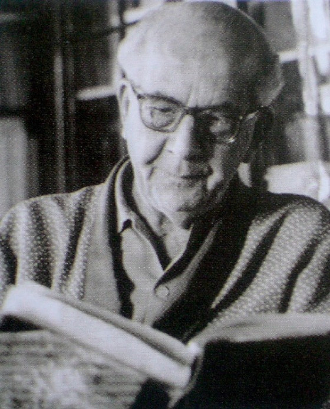

Augusto Mijares nació en Villa de Cura (estado Anzoátegui) el 12 de noviembre de 1987, pero desde muy joven se residenció en la ciudad de Caracas. Se graduó de Abogado en la Universidad Central de Venezuela (UCV) en 1921 y también de Profesor en Geografía e Historia el año 1938. De las dos carreras en la que se tituló, Mijares mostró predilección por la de docente, inicándose como maestro de aula a los dicisiete años. En este quehacer no solo se destacó por su práctica pedagógica, sino también por sus aportes en las reformas de los programas de enseñanza, creación de las escuelas y los cargos meritorios que ocupó en el sistema educativo, siendo de gran reconocimiento su participación como Ministro de Educación en 1948. Este insigne educador, también fue un escritor destacado. En 1964 escribió su obra El Libertador, considerada una de las mejores bioigrafías sobre Simón Bolívar. Augusto Mijares, hoy día, sigue inspirando a muchos profesionales, especialmente a docentes, que ejerciendo los valores de la "justicia, el bien, la belleza y la verdad", apuestn por un aprendizaje que contribuya a potenciar las capacidades del estudiante y el docente, en plena sintonía con las necesidades y características socio-culturales de la sociedad donde tiene lugar el hecho esducativo.
APORTES PEDAGÓICOS DE AUGUSTO MIJARES
1. Formación en valores para construir el futuro del país.
2. Para formar en valores es necesario llegar a la dimensión “afectiva” del ser humano.
3. Educar en virtudes e integrar la afectividad y la razón.
4. La educación moral es una educación sentimental, actuar virtuosamente es actuar desde una inclinación formada por el cultivo de las virtudes cívicas como la constancia y la probidad.
5. Integrar lo afirmativo venezolano en la educación.
Augusto Mijares fue considerado como uno de los ensayistas más destacados del siglo XXI. Esta ha sido su obra:
1. La patria de los venezolanos (1750)
2. La interpretación pesimista de la sociología hispanoamericana(1938)
3. Hombres e ideas de América (1940)
4. Educación (1943)
5. La luz y el espejo (1955)
6. La ideología de revolución emancipadora (1961)
7. Lo afirmativo venezolano (1963)
8. El Libertador ( 1964)
9. La evolución política de Venezuela (1967)
10. Longitud y latitud (1971)